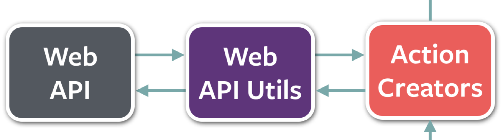

I'd like to discuss how one might approach asynchronous interactions between the flux architecture and server-side for doing your typical save, delete, etc. Specifically for my example I'm using the Fluxxor implementation of the flux architecture. You don't have to use fluxxor as you can just stick with vanilla flux or choose from one of the many other options out there (McFly, Reflux, DeLorean, Fluxy). I'm using node and mongo on the backend and communicating to it via websockets. It could easily be ASP.NET or any backend of your choosing using ajax. I believe this approach fits nicely within their architecture. If you're not familiar with what the Flux architecture is then go read the official docs. Then, if you're interested in the Fluxxor implementation, hop on over to the fluxxor docs. I would advise familiarizing yourself with the overall flow of the flux architecture before continuing.

So as you can see from the diagram above, flux concentrates on a single data flow direcion.
In Summary:
- The user triggers an event on the UI which the component can respond to with an action creator
- The action creator can "leave the main flux loop" to get/post data to the server. Once this is completed, the action creators can then continue creating an action in response to an event on the UI.
- The action creator dispatches the action via the Dispatcher
- Stores can register with the Dispatcher and provide it a callback which allows the dispatcher to hook into the store for certain events the store is interested in.
- Stores update their state in response to the dispatched action and can then emit a change event which any React component can hear to tell it that something might need to be updated and re-rendered.
For the purpose of this blog post I'll be focusing on step #2 from above:

So, lets jump into some code shall we? First, I created a services module which strictly handles communicating to the server. It requires socket.io to talk to the server via events and Q for doing the async communcation via promises. Here is a simplified version of what this might look like:
var socket = require('socket.io-client')('localhost'),
Q = require('q');
var TodoService = {
addTodo: function(todo) {
var defer = Q.defer();
socket.on('todo-added', function(todo) {
defer.resolve(todo);
});
socket.emit('add-todo', todo);
return defer.promise;
},
loadTodos: function(todos) {
var defer = Q.defer();
socket.on('init-data-payload', function(todos) {
defer.resolve(todos);
});
socket.emit('get-init-data');
return defer.promise;
}
};
module.exports = TodoService;
Secondly, in my action creators I have them communicate with this service to do any interactions they may need to do with the server. Once the interaction is complete with the server, the promise resolves and the action creator can dispatch the action with the relevant updated data. This might look someting like this:
var constants = require('../constants/constants'),
service = require('../services/todo-service');
var actions = {
addTodo: function(text) {
var _this = this;
service.addTodo({text: text}).then(function(todo) {
_this.dispatch(constants.ADD_TODO, todo);
});
},
loadTodos: function() {
var _this = this;
service.loadTodos().then(function(todos){
_this.dispatch(constants.LOAD_TODOS, todos);
});
}
};
module.exports = actions;
And that is pretty much it. I have seen examples where different actions can be dispatched as a result of different responses from the server. I think this is a really nice approach and as this is an overly simplified implementation I did not include this. This can be useful for when you want to send data down to display a loading screen or some type of success/error messages etc.
I hope you found this post useful. I tried to keep it as simple as possible for the purpose of this post. The full code can be found on my Github. If you have any questions or comments please feel free to reach out to me on Twitter or in the comments section below. Cheers!